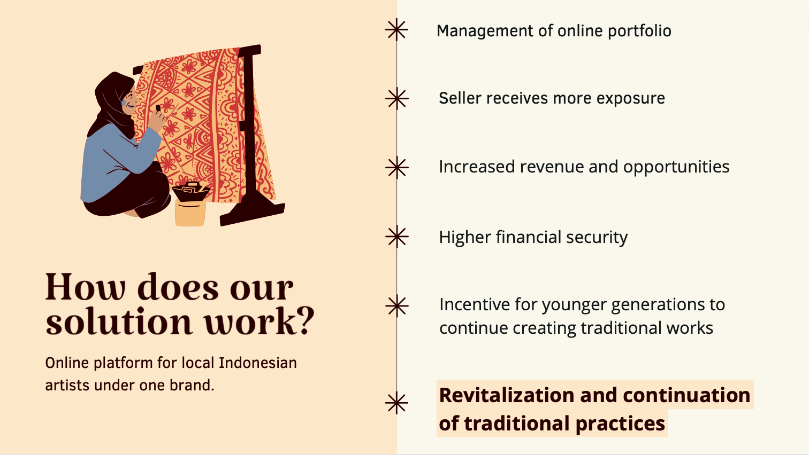
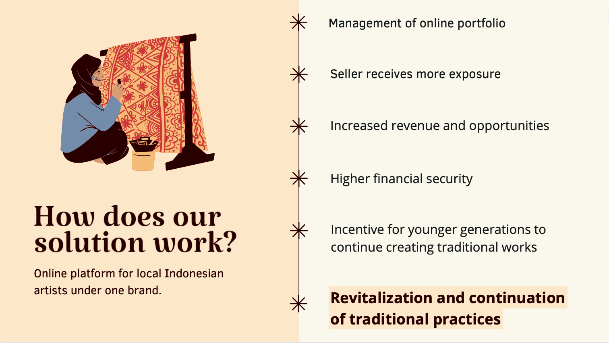
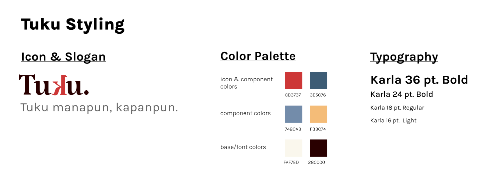
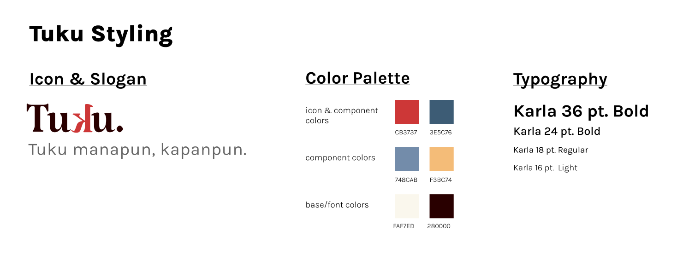

UX Portfolio
Won 1st Place Best Pitch at Garuda Hacks Hackathon by creating a UI/UX design of an online e-commerce platform (Tuku) for Indonesian crafts to revitalize and continue traditional practices
 


 

Here is a link to the figma user interface design for Tuku.